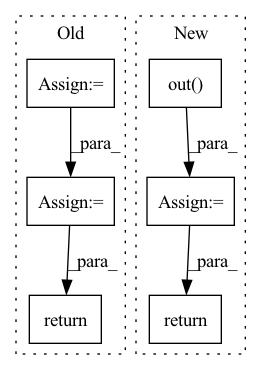

Pattern ID :607
Before Change
bias=False)
def forward(self, x, c, c_):
c_onehot = torch.cat((c, c_), dim=1).to(self.device)
width_size = x.size(3)
x = self.conv_layer_1(x)
x = self.down_sample_1(x)
x = self.down_sample_2(x)
x = x.contiguous().view(-1, 2304, width_size // 4)
x = self.down_conversion(x)
x = self.residual_1(x, c_onehot)
x = self.residual_2(x, c_onehot)
x = self.residual_1(x, c_onehot)
x = self.residual_1(x, c_onehot)
x = self.residual_1(x, c_onehot)
x = self.residual_1(x, c_onehot)
x = self.residual_1(x, c_onehot)
x = self.residual_1(x, c_onehot)
x = self.residual_1(x, c_onehot)
x = self.up_conversion(x)
x = x.view(-1, 256, 9, width_size // 4)
x = self.up_sample_1(x)
x = self.up_sample_2(x)
x = self.conv_1(x)
outputs_reshaped = x[:, :, : -1, :]
print(outputs_reshaped.shape)
return outputs_reshaped
class Discriminator(nn.Module):
def __init__(self, num_speakers=4):After Change
x = self.up_sample_1(x)
x = self.up_sample_2(x)
out = self.out( x)
return out
class Discriminator(nn.Module):
def __init__(self, num_speakers=4):In pattern: SUPERPATTERN
Frequency: 3
Non-data size: 6
Instances Fragment ID: 2284162
Project Name: oscarshu0719/pytorch-stargan-vc2
Commit Name: 3af590c49514eccd6ca436f239c67118add8a86d
Time: 2020-05-15
Author: vm3y3rmp40719@gmail.com
File Name: model.py
M Class Name: Generator
N Class Name: Generator
M Method Name: forward(3)
N Method Name: forward(4)
M Parent Class: nn.Module
N Parent Class: nn.Module
M File Name: model.py
N File Name: model.py
M Start Line: 248
M End Line: 280
N Start Line: 266
N End Line: 269
Before Change
x2 = self.down2(x1)
x3 = self.down3(x2)
x4 = self.down4(x3)
x5 = self.down5(x4)
x = self.up1(x5, x4)
x = self.up2(x, x3)
x = self.up3(x, x2)
x = self.up4(x, x1)
x = self.up5(x, x)
x = self.outc(x)
return torch.sigmoid(x)
After Change
up2 = self.up2(up1, down2)
up3 = self.up3(up2, down1)
out = self.out( up3)
return out
Fragment ID: 2284163
Project Name: cloneofsimo/mindiffusion
Commit Name: c84221717042f2235d39ab9be621950aa55208f2
Time: 2022-04-15
Author: cloneofsimo@gmail.com
File Name: mindiffusion/unet.py
M Class Name: Unet
N Class Name: NaiveUnet
M Method Name: forward(3)
N Method Name: forward(2)
M Parent Class: nn.Module
N Parent Class: nn.Module
M File Name: mindiffusion/unet.py
N File Name: mindiffusion/unet.py
M Start Line: 62
M End Line: 75
N Start Line: 71
N End Line: 83
Before Change
v = self.NIN_2(h)
w = torch.einsum("bchw,bcij->bhwij", q, k) * (int(C) ** (-0.5))
w = torch.reshape(w, (B, H, W, H * W))
w = F.softmax(w, dim=-1)
w = torch.reshape(w, (B, H, W, H, W))
h = torch.einsum("bhwij,bcij->bchw", w, v)
h = self.NIN_3(h)
return x + h
class Upsample(nn.Module):After Change
attn = attn.view(batch, n_head, height, width, height, width)
out = torch.einsum("bnhwyx, bncyx -> bnchw", attn, value).contiguous()
out = self.out( out.view(batch, channel, height, width))
return out + input
class ResnetBlocWithAttn(nn.Module): Fragment ID: 2284154
Project Name: janspiry/image-super-resolution-via-iterative-refinement
Commit Name: 1a5a8bc409a8b8e072eb2bf25330d4662fd279c4
Time: 2021-08-09
Author: lw_jiang@foxmail.com
File Name: model/ddpm_modules/unet.py
M Class Name: AttnBlock
N Class Name: SelfAttention
M Method Name: forward(2)
N Method Name: forward(2)
M Parent Class: nn.Module
N Parent Class: nn.Module
M File Name: model/ddpm_modules/unet.py
N File Name: model/ddpm_modules/unet.py
M Start Line: 125
M End Line: 136
N Start Line: 111
N End Line: 128